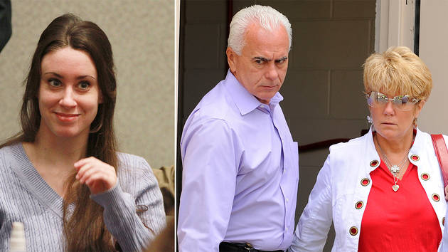
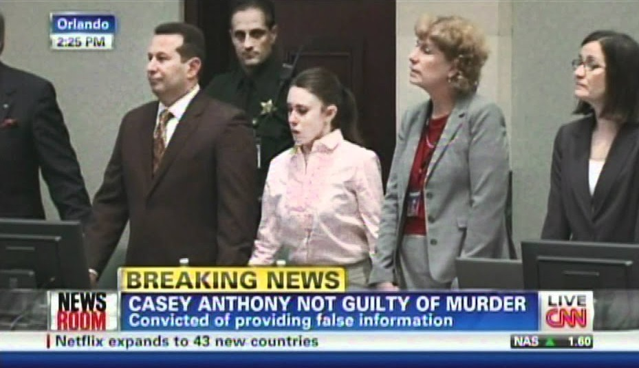

Casey Anthony Acquitted of Murder
JULY 24th, 2019
By MARSHALL COPELAND
Casey Anthony is a woman who reported her two-year-old daughter Caylee as missing on July 15th, 2008, even though she had not seen her for 31 days. After lying to authorities about what might have happened to her, involving stories about a fake nanny abducting Caylee, Casey Anthony was charged with 1st-degree murder in October of 2008. Anthony pleaded not guilty and awaited her trial in jail for almost three years until May of 2011. The trial lasted from May to July with the verdict being reached by the jury on July 5th, 2011. The entire nation followed up with this case, first hoping that they would be able to find Caylee, with various search attempts and thousands of dollars put into trying to find her. But when Anthony was charged with 1st degree murder, and Caylee’s body was found in a trash bag in a heavily wooded area in December of the same year, the entire country turned against Anthony. Throughout the case, through all of the evidence and testimonies, people were certain that Anthony had murdered her daughter to live a carefree lifestyle, as she was still in her early 20’s. So, when the verdict was reached in less than 11 hours, which is a very short time for deliberation, everyone was sure that she was going to get the death penalty. However, as the verdict came out as not guilty for anything except for lying to authorities, there was immediate outrage and speculation. So, if the whole country thought she was guilty, her parents thought she was guilty, and jury thought she was guilty, why did Casey Anthony walk free? There are many hypotheses on why she was acquitted, but the most evident reasons were because there just wasn’t enough evidence to connect her to Caylee’s death, and the possibility that the jury lacked in impartiality.
Throughout the trial of Casey Anthony and her involvement in the death of her daughter Caylee, the public was certain that she had murdered her daughter. News would be rolling out everyday with updates in the case, giving more and more “evidence” that proved her role in Caylee’s death. From the suspicious story that she drowned in a pool and then Casey panicked and quickly disposed of her body, which was the defenses interpretation of what happened, to the mentioning of chloroform that was supposedly used to knock Caylee out while Anthony suffocated her with duct tape. News like this convinced the public beyond reasonable doubt that Casey Anthony killed her daughter so much that there are even references to the situation in pop culture. In Childish Gambino’s song “Bonfire”, which released on July 22nd, 2011, just 17 days after the guilty verdict, he raps “…made the beat and murdered it: Casey Anthony”. That’s not it, however, as Eminem raps about Anthony and her defense attorney, Jose Baez, in his song “Evil Twin”, released in 2013. “Jose Baez couldn't beat this rap, OJ no, Hooray, I'm off the hook like Casey Anthony”. Both of these references insinuate that Anthony was guilty in their opinion, just like the rest of the country. However, the public is not the ones who decide the verdict, it’s the twelve-person jury that was selected that acquitted her. Even though everyone thought she was guilty, the jury that was closest to the trial said otherwise. But why? Well the most problematic part of the case was that there just wasn’t enough evidence to conclude beyond reasonable doubt that Anthony murdered her daughter. In a paper that reported on instances where erroneous data was used, the authors concluded that the prosecution didn’t have such a good piece of evidence here, where a word search for the word “chloroform” on Anthony’s computer gave misleading results. “The forensic software used to search for the term “Chloroform” reported that the word was cited 84 times by the primary suspect while it was only once, mentioned, with the erroneous data, proving to be a severe setback for the prosecution” (Meyers, et al). Now if this had been the only case erroneous data or not-so solid proof, then the verdict may have been different, but details like this plagued the case, and possibly let a murderer walk free.
Another problem with the case was with Caylee’s body. The time difference between when she went missing and when her body was found almost six months apart, giving plenty of time for her body to decompose and diminish the amount of evidence to be obtained. “Caylee was last seen June 16, 2008. Her remains were found Dec. 11 in a wooded lot near the Anthony home” (Alvarez). Despite this, the prosecution sought to use every piece of evidence they could to lock Anthony up. At one point, the prosecution depended heavily on the duct tape that was found with Caylee’s remains. They got a report from the medical examiner and the FBI forensics team that the duct tape was large enough to cover both Caylee’s mouth and nose, corroborating the theory of Anthony using chloroform to knock her out and duct tape to kill her, and there was heart-shaped residue from a sticker that might have been there on the duct tape. “Elizabeth Fontaine, a physical scientist and forensic examiner, testified that there was heart-shaped residue on the duct tape that had been over the mouth of the 2-year-old. “It was approximately the size of a dime,” Fontaine testified. “If you were to wear a band aid for an extended period of time, and then take it off, there would be glue residue and debris. That’s what this looked like, but in the shape of a heart.”” (Helling). Another piece of evidence that the prosecution tried to use was the odor coming from the back of Casey Anthony’s car. When Anthony’s father, George, went to take Casey’s car to the shop, he noticed an odor coming from the back of the car. When he opened the trunk, he said that it was the unmistakable smell of a dead body, and that it was the worst thing that he had ever smelled. So eventually, the smell caught the attention of investigators during the case, so they literally bottled up the smell. Then, during the trial, the prosecution wanted the jury to smell the odor and see what they thought it was. The judge, Belvin Perry, had different plans, and said that the jury was not allowed to smell the odor from the car. “The court will exercise its discretion and not allow any smell tests by jurors” (Perry). The prosecution just didn’t have enough real, tangible evidence to put Casey Anthony behind bars. Most, if not all of the evidence was circumstantial and loosely related at best, so it isn’t that surprising that Anthony got let off the hook.
Not only was it a lack of evidence that allowed Anthony to walk free, many argue that it was also the jury’s fault. Now of course, it was the jury who decided that she would be innocent in the crimes she allegedly committed, but in this case, it could be a lack in jury impartiality. There were many ways that this could be introduced back in the pre-internet era, but in 2011, with the rise of social media, this caused a new problem to arise. Since social media was becoming increasingly popular, more and more people would express their ideas and create large communities around topics. “…nearly one-million people were blogging about the trial, and thousands more were commenting about it on other various social media sites” (Simpler). With this many people talking about the case, it quickly became the most popular issue to talk about in the US. Now the news stations were all calling Anthony guilty before the verdict, so that mindset trickled into the blogs, forums, and comment sections of the internet until it became a mainstream ideology. This was perfectly fine, of course, for ordinary Americans expressing their views, but where it wasn’t fine was when the jury of the trial was surrounded by this information as well. Jury’s in the court of law have to be honest, deliberate, and most importantly, impartial, and only use the information given in the court case to reach the verdict. But with all of the social media activity surrounding the case, the jury had to have been exposed to extraneous information. There is a “…constitutional need for impartial jurors who base their subjective opinions on evidence introduced at trial instead of hearsay that takes place outside the courtroom”. “…jurors should restrain themselves from being influenced by what they read on social networking websites”, because “…they are psychologically affected” (Simpler). There is a very high chance that the majority of the jury was exposed to the anti-Anthony rhetoric coming from the public and felt the need to misinterpret or change the meaning of reasonable doubt to balance the lack of hard evidence with the extremely negative public opinions of Anthony. By doing so, they proceeded to not convict Casey Anthony in Caylee’s murder, and is likely one of the main reasons she walked free.

Even more evidence that the jury lacked in impartiality comes from how the jury selection was carried out. Normally, juries are picked from where the crime was committed, so they are familiar with the area and any other aspects that might have to deal with the location of things in the case. But since this trial was so popular, with “…six hundred press passes distributed for the trial, and a reporter from each major network attending”, “Judge Perry decided to "import" the jury rather than move the trial” (Speegle). In doing so, the jury was displaced, away from their families, and put into a highly stressful environment. Being a juror in a case where the defendant can face the death penalty if convicted puts a lot of emotional baggage on their conscience, but when there is an angry crowd outside the courthouse, and everything on the TV, radio, or internet is about the case, it had to have gotten overwhelming. So maybe that short eleven-hour jury deliberation time wasn’t so fast due to Anthony’s innocence, maybe it was due to the fact that this trial had taken an enormous toll on the jurors, and they sought to end the battle as quickly as they could. However, they might not have been able to convict her because the jury thought that if they did, the death penalty would be invoked, and they would never be able clear their conscience for the rest of their life, sacrificing their own mental health for a possible killer walking free.
After the trial, many people continued the idea that there had been no justice for Caylee. So, after the verdict was reached, somebody wrote a message on Change.org that would make it illegal for someone to not report the death or disappearance of a child after an hour of the parent or guardian realizing. The petition received tremendous support almost immediately, and everyone was optimistic of it passing. “The petition was posted on July 6, 2011, just 1 day after the verdict. By the following day, the petition had more than 100,000 signatures, and after just 4 days, more than 1,000,000 signatures. As of June 5, 2012, the petition had accumulated 1,308,199 signatures from individuals across the country” (Socia). However, despite the massive public support behind the law, no new legislation was enacted. Many people felt that Caylee had been let down twice, and that there still was no justice. Once again, in a country that lives and breathes democracy, where the people vote and the politicians listen, the people had no say in this trials, and it led to the not guilty verdict for Casey Anthony. “Immediately after being declared not guilty for killing Caylee, the majority of five-hundred people outside of the courtroom began chanting "justice for Caylee" and "baby killer!" Outrage also erupted online through social media and on television by reporters and analysts” (Battaglia). One of the main takeaways from this case is that the Casey Anthony trial had two verdicts. There was the “not guilty” verdict, coming from the jury, and the “guilty” verdict coming from the court of opinions. Although Anthony was not guilty of murder and manslaughter, she was still guilty in lying to investigators and had to serve time for that and pay fines. She most likely will never be able to live a normal life again, but neither will many of the other members in the case, like the jury, lawyers, or family members. The most important thing to note though, is that Caylee will never be able to have a normal life, and that is the most disturbing.
In the trial of Casey Anthony, where the woman charged with the murder of her two-year old daughter walks free, many things stemmed from this case. Discussions on jury privacy rage on after this case, debating how much information about the jury should be released after the trial, since it is demanded by law that the jury members names are made public. Discussions about what to do about missing children rages on. It’s obvious that normal, concerned parents would immediately call the proper authorities if their child was missing, but what is the criminal punishment, if any, for responsible parties who fail to act in a timely manner. And then there are the discussions about whether Anthony was truly innocent, raging on after the verdict but slowly dying out in the past couple years due to irrelevance. Now when people hear Anthony mentioned, they will shake their head and smile, saying “She was the one that got away”. This case usually gets referenced as a trial that represents the failure of the justice system, and that is likely true. But there are only two reason for why Casey Anthony was acquitted in the death of her daughter. There just wasn’t enough solid, tangible evidence to connect Anthony to Caylee’s suspicious death, and the “imported” jury lacked in impartiality. As the case is looked back upon, more than eight years later, a lot can be said about what evidence was presented and which witnesses were reviewed and what went wrong, but at the end of the day, she is innocent under the American justice system, and that is something we can all agree upon.

Works Cited
Alvarez, Lizette. “Casey Anthony Not Guilty in Slaying of Daughter.” The New York Times, The New York Times, 5 July 2011, www.nytimes.com/2011/07/06/us/06casey.html
Battaglia, Nicholas A. "The Casey Anthony Trial and Wrongful Exonerations: How Trial by Media Cases Diminish Public Confidence in the Criminal Justice System." Albany Law Review, vol. 75, no. 3, 2011-2012, pp. 1579-1612. HeinOnline, https://heinonline.org/HOL/P?h=hein.journals/albany75&i=1599
Eminem. “Evil Twin.” The Marshall Mathers LP 2, Aftermath, Interscope, Shady, 2013, track 16. Spotify, https://open.spotify.com/album/6DN7GcZF1HywzrkGN6Eeqk
Gambino, Childish. “Bonfire.” Camp, Glassnote Records, 2011, track 3. Spotify, https://open.spotify.com/album/32KdoFFhgjCLdU0DWL71tx
Helling, Steve. “Casey Anthony Trial: Heart-Shaped Sticker Residue Found on Duct Tape.” PEOPLE.com, 13 June 2011, 12:15, https://people.com/crime/casey-anthony-trial-heart-shaped-sticker-residue-found-on-duct-tape/
Meyers, Matthew, and Marcus Rogers. “Digital Forensics: Meeting the Challenges of Scientific Evidence.” Advances in Digital Forensics IFIP — The International Federation for Information Processing, pp. 43–50., doi:10.1007/0-387-31163-7_4. https://www.researchgate.net/profile/Humera_Arshed/publication/327644306_Digital_Forensics_Review_of_Issues_in_Scientific_Validation _of_Digital_Evidence/links/5b9b298592851ca9ed06467d/Digital-Forensics-Review-of-Issues-in-Scientific-Validation_Digital
Richey, Warren. “Casey Anthony Trial: Should Jurors Be Allowed to Smell the Evidence?” The Christian Science Monitor, The Christian Science Monitor, 1 July 2011, www.csmonitor.com/USA/2011/0630/Casey-Anthony-trial-Should-jurors-be-allowed-to-smell
Simpler, Miland F. III. "The Unjust Web We Weave: The Evolution of Social Media and its Psychological Impact on Juror Impartiality and Fair Trials." Law & Psychology Review, 36, 2012, pp. 275-296. HeinOnline, https://heinonline.org/HOL/P?h=hein.journals/lpsyr36&i=279
Socia, Kelly M., and Elizabeth K. Brown. “‘This Isn’t About Casey Anthony Anymore.’” Criminal Justice Policy Review, vol. 27, no. 4, 2014, pp. 348–377., https://journals.sagepub.com/doi/pdf/10.1177/0887403414551000
Speegle, Clinton T. "Socially Unpopular Verdict: A Post-Casey Anthony Analysis of the Need to Reform Juror Privacy Policy." Cumberland Law Review, vol. 43, no. 2, 2012-2013, pp. 259-310. HeinOnline, https://heinonline.org/HOL/P?h=hein.journals/cumlr43&i=279